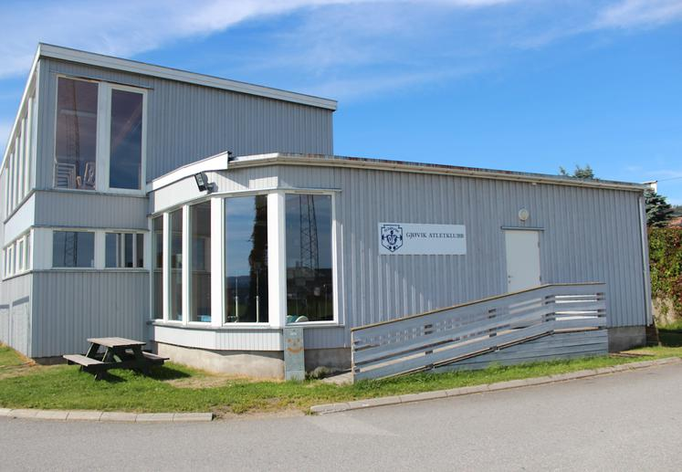

Tren med oss
Ved trening hos oss medbringes treningsklær, joggesko/crossfitsko/vektløftersko og drikkeflaske!
Vi har dame- og herregarderobe.
Håper vi sees på trening!

ETNINGSLINJER FOR MEDLEMMER I GJØVIK ATLETKLUBB OG VÅRE LEIETAKERE
1. Den enkelte atlet har ansvaret for å rydde det utstyret de har brukt tilbake til rett plass.
2. Hvis det er noen som ikke har ryddet etter seg, ta det du. Dette skaper et mer ålreit treningsmiljø og neste gang kan det være du som glemmer deg bort.
3. Hvis du ser noen som ikke rydder etter seg, si ifra enten til vedkommende , trener eller et styremedlem slik at det blir ryddet.
4. Hvis noen av atletene ønsker å ta med en gjest for å overvære treningen gjelder følgende:
- Det må avtales med leder eller trener på forhånd
- Medbrakt gjest skal forholde seg rolig og ikke blande seg i eller forstyrre treningen på noen måte.
- Gjelder det noen som vil prøve vektløfting, skal det avtale med trener for å finne passende tidspunkt
5.Det skal støvsuges minimum en gang i uken og etter behov. Oppsatt støvsugerliste og sjekkliste skal følges. Alle rom, hovedrom, tilbygg og apparatrom, skal støvsuges.
6.Kjøkken, stue og soverom skal ryddes hver dag og vaskes en gang i uken og ved behov. Oppsatt vaskeliste og sjekkliste skal følges. Dersom dette ikke blir overholdt vil kjøkkenet bli stengt på ubestemt tid.
Her finner du oss
Gjøvik Stadion, Oscar Nissens Gate 2, 2821 Gjøvik

Medlemspriser
| Ungdum | 350 kr/ar + medlemsavgift |
| Junior | 1350 kr/ar + medlemsavgift |
| Student | 1350 kr/ar + medlemsavgift |
| Senior | 2000 kr/ar + medlemsavgift |